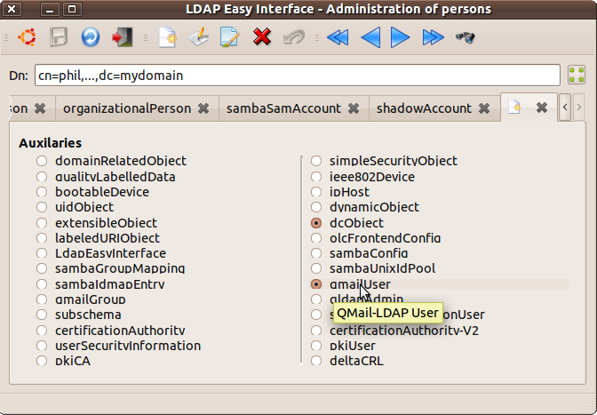
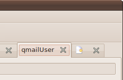
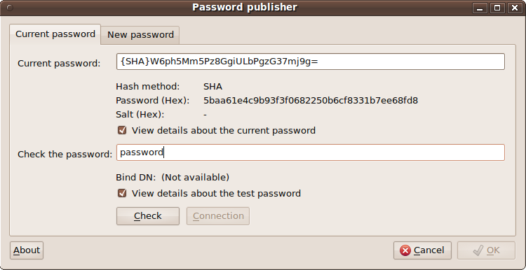
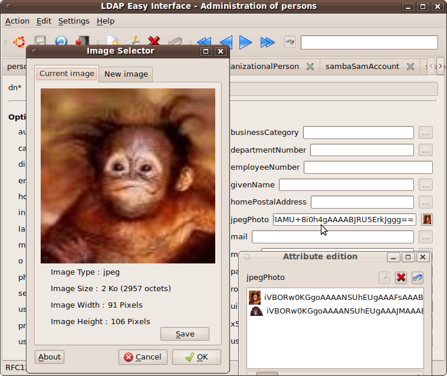

This GUI shares its code with the three other GUIs: "
domainFrontend".
The name of its launch executable must therefore contain the string "
Frontend"
preceded (without space or other charactere)
by the name of the "
object Class"
of the entity that it manages. (here: "
person", ie: "
personFrontend").
Such an executable may be called by a physical or symbolic link ("
ln [-s]")
that meets the above rule or, failing that, that does not contain the string "
Frontend".
This rule is recursive, and therefore operates on links of links.
The operating principle of this interface of LDAP domains management is the dynamic creation of its input mask from:
- the list of "object Class" constituting the domain being viewed (or created or modified),
- and a list of their constituent attributes.
When the architect of the LDAP directory adds or removes one or several "
objectClasses",
this information is saved in the LDAP database. Thereafter, any
definition of user account that will be created or modified will be be
impacted by this new schema.
Except the principle of this "
objectClasses" declaration that make up a user account, the rest of the operation of this interface is the same as the interface "
domainFrontend".
In editing mode:

Notice:
- the list of "inheriting objectClasses" (not present here because empty - already include into the current object) is based on the "objectClasses" already constituting the object.
Result:

To remove an "objectClass", just close its tab; but, the basic "objectClass" (here "person") can not be deleted, as any parent "objectClass" of already selected "objectClasses" for the current entity.
The tab order can be modified (drag & drop) and will be saved automatically when exiting the interface, provided that the role "adminStruct" is assigned to the login account that was used during the connection to the current session.
This entry is based on the notion of triggers described here... One of the utilities that can be called when specific entries is, for example: "
slappassword".
This utility of the"
LdapEasyInterface" projet constitutes a graphical interface to the console command: "
slappasswd" from the "
openLdap" projet.
It can also be used independently to verify or change a password in the LDAP directory, including the connection attempt (see: "
slappassword --help").

Syntax:
slappassword [ (-H/--host "hostname[:port]") / ("anIPCLdapConnectionIsActive") --dn "userDn" [--update] ] [--date "secondesSince1970"] [--minLength/-m #] [{scheme}currentHashedPassword / --stdin]
- option --host/-H : allows to give the name of the server hosting the LDAP database (in case of test connection and/or with the option: "--update").
This option is not necessary when a session is actually active in
shared memory (when an other ldapEasyInterface interface is running and
already connected).
- option --dn/-d : allows to give the connect DN for which we wish to verify/update the password. This option is associate to the previous one: "-H" or to the current IPC connection (shared memory).
- option "--date" allows to give reference date (format UNIX : secondes number since 1970) before which the change of password will not be allowed (see here),
- option --update : specifies that, if the connection check has been successfully (or an IPC connexion is already active)
and a new password has been updated, then the backup of this new value
will be tried during the return from the current interface, button: "Ok". The attribute "userPassword" will be update (as well as the LDAP permissions allow it). Be careful when using this option when the interface is called from a trigger of the GUI "personFrontend" or "posixGroupFrontend". Indeed, this may conflict with the update performed by the call interface itself during its validation...
- The last parameter is the hach value on break (button: "Cancel"). This allows the call interface not to change the value of the input field
(or: to replace the old value with this same value) in case of breaking.
- This last parameter can be substituted with the option "--stdin" or "-"
; in this case, the returned value of the interface is read directly from the standard input of the execution process (useful in case of interfaces "ldapEasyInterface" as "personnFrontend".
In this case, the length of this value is not limited, unlike the
command line parameter - although in this case, passwords input, the
question does not arise ...).
(All these parameters are optional - usual meaning of "[]" ... ;-).
Source of "
slappassword" (version 0.3 - 20101006)
here...
Limitation: As explained above, this GUI uses to run the "
slappasswd"
utility from the "
OpenLdap" project. So, "
slappassword" allow to do only that what this utility can do
in console mode ("
shell")...
To date (2010/08), "
slappasswd" manages the list of the following formats: "
SHA, SSHA, MD5, SMD5, CRYPT and Plain Text" ;
it does not allow verification of passwords in the format "
SSHA" et "
SMD5",
but only their definition (the "
Check" button to the GUI "
slappassword" will remain not valid when the current password will be in one of these two formats).
Note: the code of "
slappassword" is shared with "
ntpassword" (see "
slappassword -help"). So, the options [
-L / -N] of the command "
ntpassword" are usable with "
slappassword",
operation resulting in this case is actually that of the command: "
ntpassword".
Another example of calling external utility to capture specific information: "imageSelector":

Syntax: imageSelector [ -/--stdin ]
It works similar to that of the previous utility ("
slappassword") about the "cancel" value returned through the standard input of the execution process...
This interface allows you to view the current image (passed on standard input) or, to select a new one that will be sent to standard output during the execution process of validation by selecting the button "
Ok"
...
If no image is selected during the validation, no image will be sent (stdout is empty). This will allow to clear the contents of the calling attribute ("
jpegPhoto", for example) from the mask "
personFrontend", as opposed to hitting the "
Cancel"
button which, returning "
exit 1", in the end, will remain the content unchanged within the GUI appellant... )
Source for "
imageSelector" (version 0.2 - 20100921)
here...
Saisie d'utilisateurs existants ou de groupes d'appartenance - utilitaire "groupSelector" :
The utility "
groupSelector"
is obtained by: "
ln [-s] sambaSidSelector groupeSelector" ... (
which it shares its source).
Syntax: "
groupSelector --domain "dnsDomainName" [--uidNumber "minUidNumber"] [--gidNumber "minGidNumber"] [-t/--type "sambaSamAccount/sambaGroupMapping/posixUser/posixGroup"] [--stdin / "currentValue"]"
- The mandatory option "-d/--domain" allows to specify the domain name in which to search the root of the "SID".
- The options "--uidNumber/-u" and "--gidNumber/-g" allow to specify the minimum value of "id" that can be displayed in the selection list...
- The option "-t/--type" allows to fixe the first list of values (comboBox) of the editinf mask to limit the selectable values to consistent information to the calling context of utility...
- an initial value of "uidNumber" or "gidNumber" can be past to the command line (or: "--stdin/-" if this value must be past to the standard input of the process, like in case of the interfaces "ldapEasyInterface-Frontend") to allow the utility "groupSelector" to suggest an initial value to the operator.
Note: This utility "
groupSelector"
connects to the LDAP directory with the connect informations of the calling interface (
IPC
-
shared memory).
It can not, in fact, connect itself to the directory to search the
information that will allow it to determine a consistent value of "
SID" ; an existing session must already be active from one of the graphical interfaces "
ldapEasyInterface"...
Here are two examples of use in the definition of trigger of this interface managing accounts and "posix" groups...